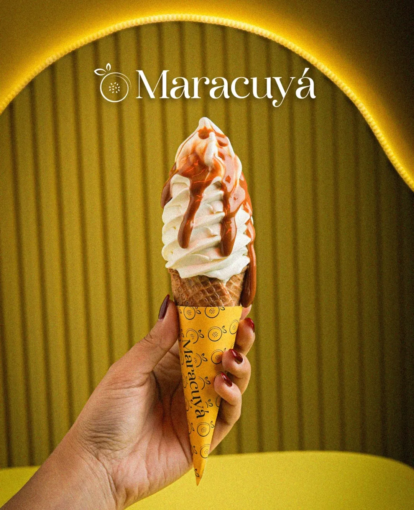

En Maracuyá - Greek Frozen Yogurt, creemos que la vida se disfruta más cuando tiene ese toque cítrico, dulce y refrescante que solo la fruta de la pasión puede dar. Nacimos en el corazón de La Floresta, Maracay, con el deseo de iluminar tus tardes con un sabor que enamora. Nuestra casa en la Calle Los Clubes es un refugio de energía positiva, donde el amarillo radiante refleja la alegría que ponemos en cada preparación. Nos especializamos en la cremosidad del yogurt griego, ofreciéndote tres opciones diseñadas para cada estilo de vida: nuestra base tradicional de yogurt blanco, una versión light para quienes buscan cuidarse sin renunciar al placer, y nuestra estrella indiscutible: el yogurt sabor a parchita. Porque para nosotros, el helado es un momento de felicidad que brilla con luz propia. ¡Ven a visitarnos y descubre por qué el amor sabe a Maracuyá! 💛
Hay muchas formas de combinar tu helado, agregándole tus Toppings y syrups favoritos lograrás ese equilibrio perfecto.
Con nuestra versión light disfruta sin remordimiento.
